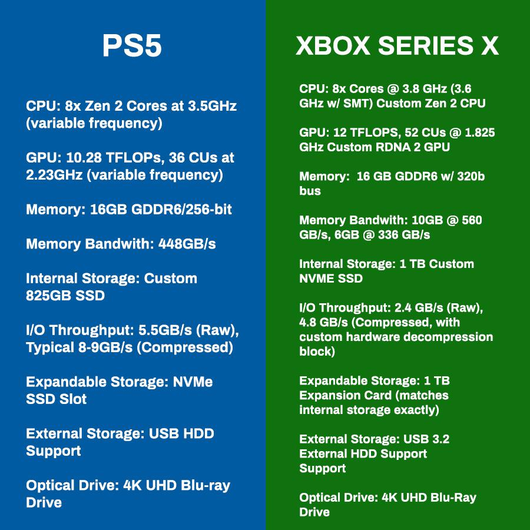
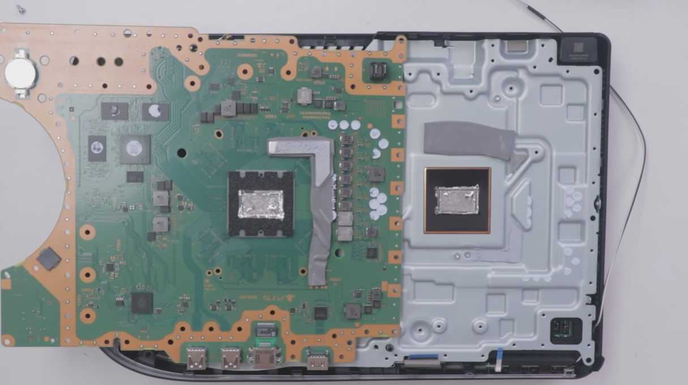
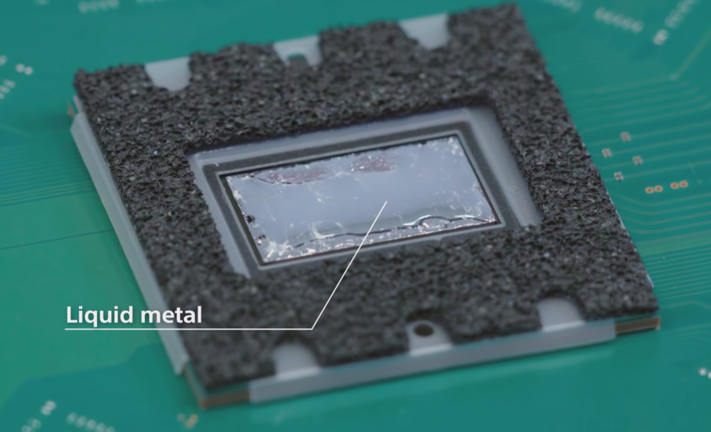
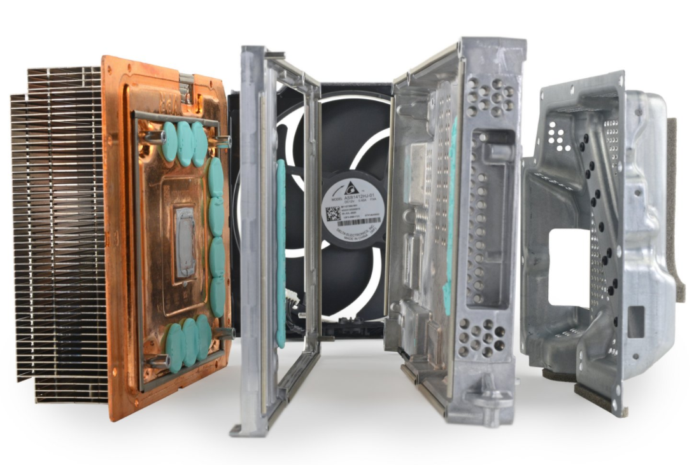

SPECS
For with every new generation, a major spec bump over the previous generation is a basically a must. But the question is, what kind internals are these bad boys packing and just
how powerful are they compared to the current consoles? And how do they compare against each other?

According to the graphic above, we can clearly see the picture here. For anyone who doesn’t understand what any of these means, it basically is a fact that these two are the most powerful consoles ever made to date, hands down. If we’re talking about raw power here, then the Xbox Series-X actually has an edge over the PS5 but only just slightly because the CPU is the same in both systems which is provided by AMD, with only a minor difference in clock speeds.
To get a rough measure as to how powerful the processing power of a computing device such as these two consoles here, we can take a look at the GPU which is measured in teraflops. Usually the higher the number of teraflops, the better the performance and this is exactly the case here. The Xbox Series-X comes in at around 12 teraflops while the PS5 is only around 10 teraflops. Again, the difference here is very minimal and performance difference should not be an issue, but it is worth pointing out.
Besides that, everything else is pretty much similar in which they have the same amount of RAM, fast SSD’s, though the Xbox does come with a bit more space at 1 terabyte meanwhile the PS5 ships with 825 gigabytes. Besides that, they both have the ability to output games up to 4K resolution and 120 Hz which is the main selling point of these new generations, thanks to those incredible specs. Now, console gaming will look beautiful as ever and run smoothly with frames able to reach 120 frames per second, adding to the immersive and seamless experience.
The amount of power these two pack are very incredible but they actually have different types of cooling solutions which is interesting.
 
The cooling system on the PS5, which utilises liquid metal
Inside the PS5, Sony decided to go for a more serious and hardcore cooling system by implementing liquid metal, which is known to be very effective and will definitely help the system to bring down the temperatures. The system also has two massive holes on the sides to pull in air into the fan and dissipate it through the back. In a nutshell, the PS5 will have a hard time getting hot and will stay quiet even under heavy loads.
The Xbox Series-X takes a slightly different approach in that Microsoft opted for the more traditional way but still managed to add in a vapor chamber inside of it. This addition works very well with the system and manages to keep the temperatures at a reasonable degree. Albeit that it is not as cool or as hardcore as the PS5’s, but it will still get the job done. On top of all that, there is an enormous fan on the very top of the console which is also where the heat is exhausted out of the system and fortunately, doesn't sound like a rocket jet.

The vapor chamber in the Xbox Series-X